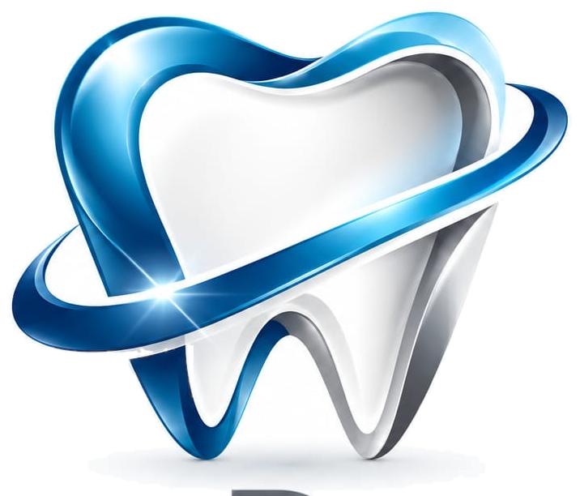
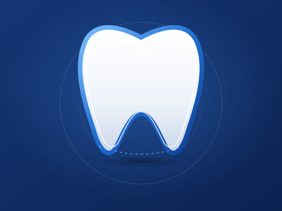
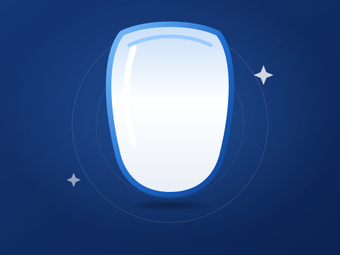
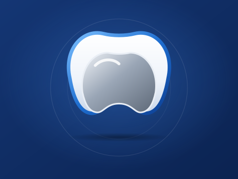
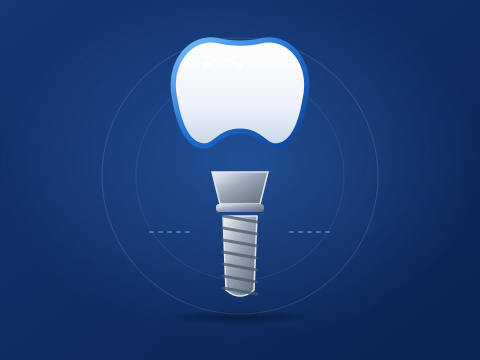
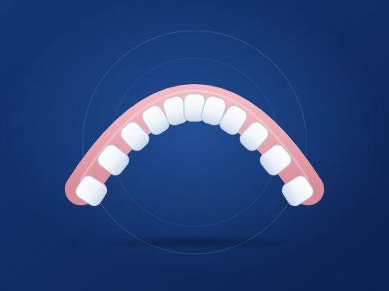
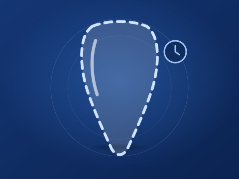

Misyonumuz
Diş hekimlerine ve teknisyenlerine, güncel dijital teknolojilerle hazırlanan, hassas ve güvenilir protez çözümlerini zamanında ulaştırmak.
Dijital Diş Protez Laboratuvarı
Bilim ve sanatın el ele ortaya çıkardığı ürünleri, en güncel CAD/CAM teknolojileriyle diş hekimlerimize ve teknisyenlerimize sunuyoruz.

Kurumsal
SeoDental, diş hekimlerine ve diş teknisyenlerine hizmet veren dijital bir diş protez laboratuvarıdır. Her vakayı, hekimin klinik planına sadık kalarak; planlama, tasarım, üretim ve kontrol aşamalarından geçen düzenli bir süreçle ele almayı hedefler.
Yaklaşımımızın merkezinde hassasiyet, güvenilirlik ve zamanında teslim yer alır. Dijital iş akışları sayesinde vaka bilgileri düzenli biçimde takip edilir; üretim süreci açık ve anlaşılır bir iletişimle desteklenir.
İyi bir restorasyon, klinik ile laboratuvar arasındaki net iletişimle başlar. Hekimin beklentilerini, vaka notlarını ve estetik tercihlerini sürecin başından itibaren birlikte değerlendirmeyi; sorulara hızlı ve anlaşılır biçimde yanıt vermeyi önemsiyoruz.
Diş hekimlerine ve teknisyenlerine, güncel dijital teknolojilerle hazırlanan, hassas ve güvenilir protez çözümlerini zamanında ulaştırmak.
Kalite, şeffaf iletişim ve sürekli gelişim anlayışıyla, hekimlerin ve teknisyenlerin tercih ettiği güvenilir bir dijital protez laboratuvarı olmak.
Ölçü, form ve uyum detaylarına her aşamada dikkat eden titiz bir çalışma anlayışı.
Tutarlı süreçler ve açık iletişimle, hekimlerin güvenebileceği bir iş birliği.
Planlı bir üretim akışı ve teslim takvimine gösterilen özen.
Temiz, düzenli ve izlenebilir bir çalışma ortamı anlayışı.
Hekim ve teknisyenlerle birlikte çözüm üreten, dinleyen bir yaklaşım.
Teknolojiyi ve süreçleri düzenli olarak gözden geçirme isteği.
Neden Biz?
Laboratuvar seçiminde kalite kadar iletişim ve düzen de önemlidir. Çalışma biçimimizi bu altı başlık etrafında şekillendiriyoruz.
Teklif AlınVaka notlarındaki ölçü ve form beklentileri üretimin her aşamasında göz önünde tutulur.
Dijital ölçü ve vaka verileriyle çalışmaya uygun, düzenli bir süreç yapısı.
Teslimden önce çalışmanın form, uyum ve vaka notları açısından gözden geçirilmesi.
Sorular ve onay noktaları için açık, zamanında ve anlaşılır bilgilendirme.
Planlı üretim akışıyla hekimin randevu takvimini dikkate alan bir yaklaşım.
Diş hekimleri ve teknisyenlerle birlikte, çözüm odaklı bir çalışma biçimi.
Ürünlerimiz
Diş hekimlerinin ve teknisyenlerin ihtiyaç duyabileceği başlıca protez ve restorasyon kategorileri. Her kategori için ayrıntıları inceleyebilir, vakanıza özel teklif isteyebilirsiniz.

Dijital tasarım ve CAD/CAM üretim akışına uygun zirkonyum malzemeyle hazırlanan kuron ve köprü çözümleri.
Zirkonyum restorasyonlar, dijital tasarım ve frezeleme tabanlı iş akışlarıyla birlikte sıkça anılan bir malzeme grubunu kapsar. Vaka formunda belirtilen restorasyon tipi, renk ve form beklentileri doğrultusunda planlanır.

Estetik beklentilerin öne çıktığı vakalar için cam seramik esaslı restorasyon seçenekleri.
E-max, estetik odaklı çalışmalarda değerlendirilen cam seramik esaslı bir malzeme grubudur. Renk ve saydamlık gibi beklentiler, vakanın başında hekimle birlikte netleştirilir.

Metal alt yapı ile porselen kaplamanın birleştiği, klasik ve yaygın bilinen restorasyon türü.
Metal destekli porselen restorasyonlar, bir metal alt yapı üzerine porselen uygulanarak hazırlanır. Alt yapı ve porselen tasarımı vakanın planına göre belirlenir.

İmplant üzerine planlanan tek üye veya çok üyeli protetik restorasyonlar için laboratuvar çözümleri.
İmplant üstü çalışmalarda protetik planlama, kullanılan implant sistemi ve hekimin tercih ettiği bağlantı biçimiyle birlikte ele alınır.

Kısmi veya tam dişsizlik durumlarında kullanılan, hekimin planına göre hazırlanan hareketli protez çalışmaları.
Hareketli protezler, hekimin ölçü, çene ilişkisi ve diş dizimi bilgilerine dayanarak hazırlanır. Prova ve kontrol aşamaları klinikle birlikte yürütülür.

Kalıcı restorasyon süreci boyunca kullanılabilecek, form ve estetik açıdan planlanan geçici çözümler.
Geçici restorasyonlar, kalıcı çalışma hazırlanırken kullanılmak üzere planlanır. Form ve renk bilgileri vaka notlarına göre belirlenir.
Kategori seçimi ve uygunluk, diş hekiminin klinik değerlendirmesine bağlıdır. Fiyat ve süre bilgisi vaka ayrıntılarına göre ayrıca paylaşılır.
Teknoloji
Modern bir dijital protez laboratuvarında vaka; veriden tasarıma, tasarımdan üretime ve kontrole kadar bütünleşik bir iş akışıyla ilerler.
Restorasyonlar bilgisayar destekli yazılımlarla dijital ortamda tasarlanır, ardından üretim aşamasına hazırlanır.
Ağız içi tarama ile alınan dijital ölçüler ve vaka bilgileri, yaygın dosya formatlarında laboratuvara iletilebilir.
Fiziksel ölçüler gerektiğinde taranarak dijital modele dönüştürülür; tasarım çalışması bu model üzerinde yürütülür.
Üretim adımları, tasarlanan formun doğru ve tekrarlanabilir biçimde hayata geçirilmesine odaklanır.
Teslimden önce çalışma; form, uyum ve vaka notları doğrultusunda kontrol adımlarından geçirilir.
Sorular, tasarım onayları ve dosya alışverişi klinikle düzenli iletişim içinde yürütülür.
Bu akış, dijital protez çalışmalarında tipik olarak izlenen genel adımları gösterir; vakanın türüne göre değişebilir.
İş Akışı
Bir hekimin veya kliniğin laboratuvarla çalışırken tipik olarak izleyeceği adımlar aşağıda özetlenmiştir.
Bu, önerilen genel bir iş akışıdır. Vakanın türüne göre adımlar ve süreler değişebilir; kesin süreç için bizimle iletişime geçin.
Teklif AlınHekim; ölçü veya dijital ölçü dosyalarını, vaka formunu ve notlarını laboratuvara iletir.
Gelen bilgiler incelenir; eksik veya belirsiz noktalar için hekimle iletişime geçilir ve iş planı oluşturulur.
Restorasyon dijital ortamda tasarlanır ve planlanan malzeme ile üretim aşamasına geçilir.
Tamamlanan çalışma; form, uyum ve vaka notları açısından kontrol edilir.
Çalışma hijyenik biçimde paketlenir ve kliniğe ulaştırılmak üzere planlanan yöntemle gönderilir.
Sıkça Sorulan Sorular
Laboratuvarla çalışmaya başlamadan önce sık sorulan soruların kısa yanıtları. Aradığınızı bulamazsanız bize yazın.
Bize UlaşınVaka formunuzu, notlarınızı ve ölçünüzü (fiziksel ölçü veya dijital dosya) laboratuvara iletebilirsiniz. Güncel gönderim yöntemi ve vaka formu için lütfen iletişim bilgilerimizden bize ulaşın; başlamak için iletişim formunu da kullanabilirsiniz.
Dijital ölçüler genellikle STL, PLY veya OBJ gibi yaygın 3B dosya formatlarında paylaşılır. Tarayıcı üreticilerine özgü formatlar için kabul edilen türlerin laboratuvar tarafından teyit edilmesi gerekir; dosya göndermeden önce bizimle iletişime geçmenizi öneririz.
Genel akış şöyledir: vaka gönderimi, inceleme ve planlama, dijital tasarım ve üretim, kalite kontrol, paketleme ve teslimat. Ayrıntılar için İş Akışı bölümüne bakabilirsiniz. Vakaya özgü adımlar ve onay noktaları hekimle birlikte belirlenir.
Teslim süresi; restorasyon türüne, malzemeye, vakanın karmaşıklığına ve prova gereksinimine göre değişir. Kesin teslim tarihi, vaka incelendikten sonra hekimle paylaşılır. Teslimat yöntemleri ve süreleri hakkında güncel bilgi için bizimle iletişime geçin.
İletişim bölümündeki formda “Teklif Talebi” seçeneğini işaretleyip hizmet kategorisini ve vaka bilgilerinizi yazabilirsiniz. Fiyat bilgisi vaka ayrıntılarına göre ayrıca paylaşılır. Teklif formuna git
Sipariş durumu hakkında telefon veya e-posta ile laboratuvara ulaşabilirsiniz. Çevrimiçi sipariş takibinin kapsamı, Online Sipariş Girişi sistemi devreye alındığında netleşecektir; o zamana kadar iletişim kanallarımızdan bilgi alabilirsiniz.
İletişim
Vakalarınız, hizmet kategorilerimiz veya teklif talepleriniz için bize yazın. Mesajınızı incelemek üzere almaktan memnuniyet duyarız.